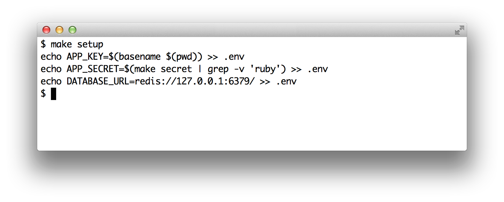
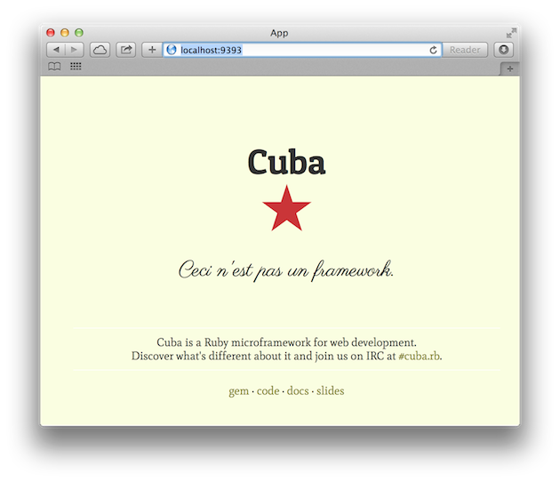

Up and Running
Now that we've installed the dependencies, it's time to see how our minimal application looks.
To get it up and running, we need to create a file with some
configurations. Go to the command line and type make setup.

As you can see, this created a file called .env. For now, it's enough for you to know that this file contains sensitive configurations for the application. We'll discuss this in more detail later.
To see the application in action, type make server in the command line.

Unlike before, we're now using shotgun instead of rackup. Shotgun is a gem that reloads the application for every request. That's great for development because we don't need to restart the server every time that we change the application. Now navigate to http://localhost:9393/. You should see the Cuba welcome page.

Shotgun uses a config.ru file just like rackup. Let's see what the config.ru file looks like in this template.
require "./app"
run(Cuba)
This time the definition of the application has been placed in a different file. This file is called app.rb and is the main file of our application. In the next section, we'll explore this file.